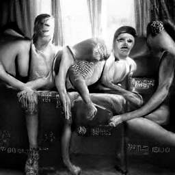
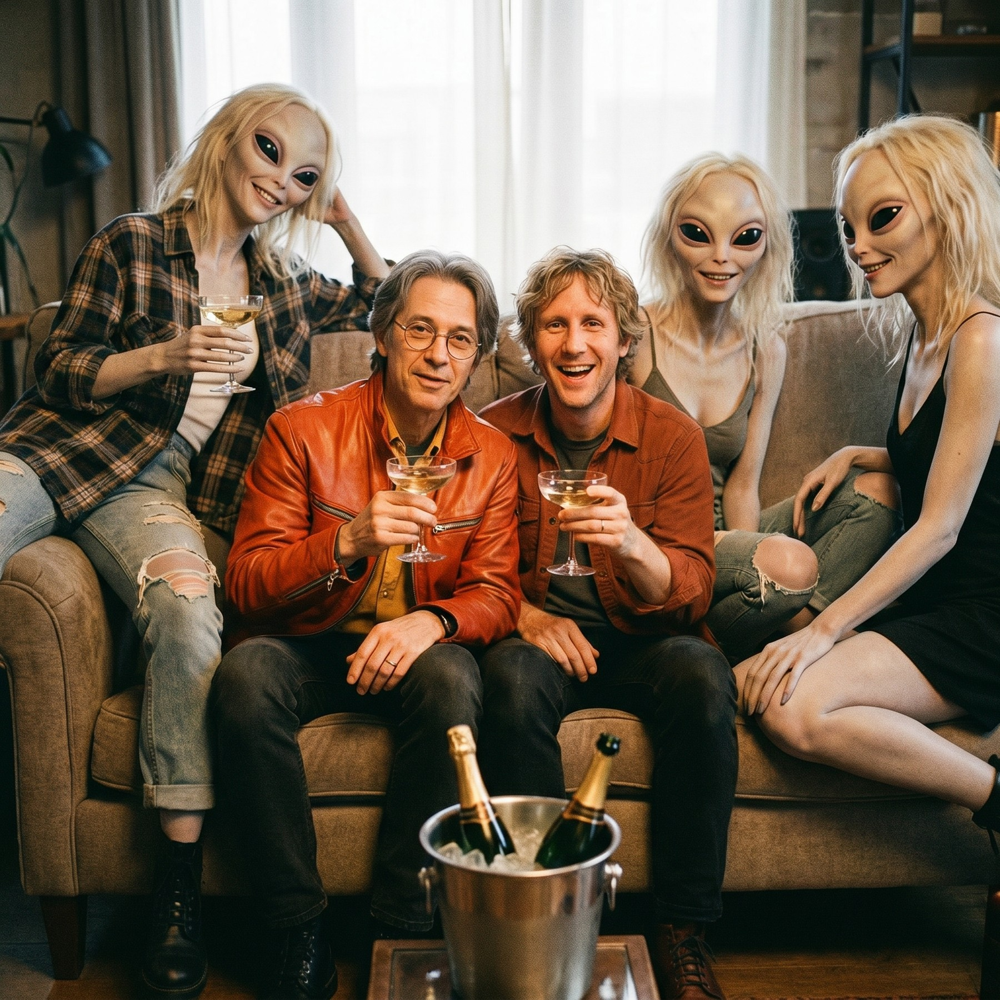

normal.
A creative studio
We make films for leading brands. Cutting-edge AI, grounded in decades of traditional filmmaking — live action, CGI and post. Made by directors, not prompts.
AI is the best thing to happen to film production in decades. Leaner shoots, wilder ideas, budgets that end up on screen — a new craft in the hands of people who know the old one.

